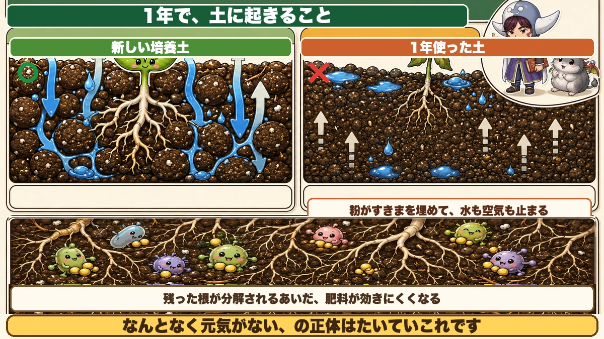
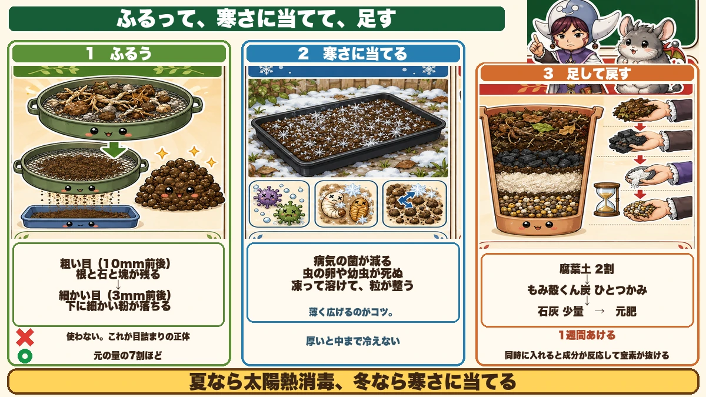
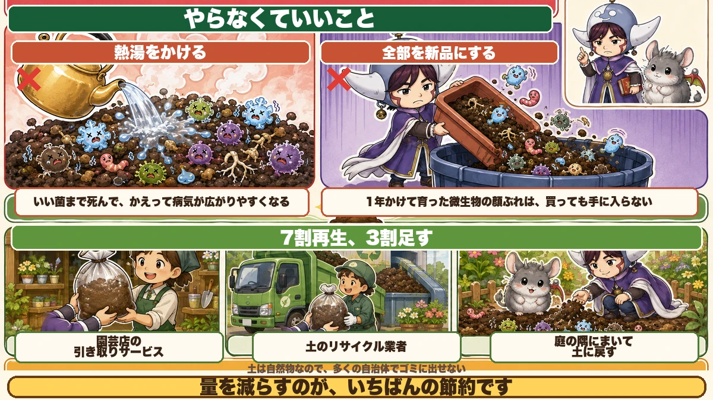

Don't throw last year's potting compost away 🪴 Sieve it over winter and it comes back

🪴 "Used compost just gets binned, doesn't it?"
🪴 "And you can't even put soil out with the rubbish."
🪴 "I kept using the same compost and things grew worse each year."
Hello, I'm Eiko. Eight years of growing vegetables organically and without pesticides, and a teaching licence in science.
If you garden in containers, replacing compost every year is a quietly painful expense — and disposing of it is awkward, since most councils won't take soil.
The most important line first:
Don't throw it away. Sieve it, leave it out over winter, and it comes back.
Why it stops working

What this diagram says （図解の文字）
- ○ New potting compost ／ ✗ compost used for a year
- "The dust fills the gaps, and water and air stop moving"
- "While the leftover roots break down, fertiliser works poorly"
- "'It just doesn't look happy' is usually this."
Three things have happened
- Roots are still in there
- The particles have broken down into dust
- The nutrients are lopsided
The second one matters most.
Broken particles stop water and air
New compost is a mixture of particle sizes, with gaps between them for water and air.
A year of watering breaks those particles down into fine dust, and the dust fills the gaps. Drainage falls, and roots can't get oxygen. "It just doesn't look happy" is usually exactly this.
The commonest way container plants die
Worth knowing: the number one cause of death in containers is root rot. Not pests, not disease.
Water every day and the roots sit permanently surrounded by water, effectively drowning. Starved of oxygen, they rot.
- Healthy roots are white and thick
- Damaged roots go brown, then grey, then dissolve
Compost whose particles have collapsed is exactly the condition where this happens. "Recycling the compost" is really restoring a state in which roots can breathe.
More roots are left than you think
However well you pulled the plant, a lot of fine root remains. It will break down — but while it does, microbes use nitrogen, so fertiliser works poorly for that period. Hence: sieve them out.
Three steps

What this diagram says （図解の文字）
- 1 Sieve. Coarse mesh (about 10 mm) — "roots, stones and lumps stay behind". Fine mesh (about 3 mm) — "the dust falls through" ✗ "don't use it. This is what clogs everything". ○ "about 70 % of what you started with"
- 2 Leave it in the cold — "disease organisms drop; insect eggs and larvae die"
① Sieve it
Buy one garden sieve — the kind with interchangeable meshes is handy.
- Coarse (about 10 mm) to take out roots, stones and lumps
- Fine (about 3 mm) to drop out the dust
The second pass is the important one. What falls through is not used — that dust is the clogging itself. You keep the middle fraction: roughly 70 % of what you started with.
But don't over-sieve — this is the trap
Get this wrong and you make things worse. Compost that runs through your fingers is a bad sign.
People try to get it perfectly clean, removing every pebble, every scrap of leaf, every fine root. That's too far. Two reasons:
First: those stones and part-rotted bits are what hold gaps open. Take them all out and it sets harder than before — rock-solid after rain — and the roots suffocate.
Second: a dust-free, free-running mix drains too fast and holds neither water nor nutrients. Nothing reaches the plant, and microbes can't establish.
- Remove only the broken dust
- Leave the small stones and leaf fragments
- Don't chase the fine roots. Taking out the thick ones is enough
Fine roots break down into food, and the channels they leave behind are gaps.
Aim for compost that just holds together when you squeeze it. If it crumbles away completely, you've sieved too hard.
② Leave it out in the cold
Spread the sieved compost thinly in a black tray or an old container and leave it outside through winter.
- Cold knocks back disease organisms
- Insect eggs and larvae overwintering in it die
- Repeated freezing and thawing rebuilds the particle structure
Solarisation in summer, cold in winter — two ways of cleaning soil without chemicals.
Spread it thin. A deep layer never chills through.
The summer version
If your winters are mild: put the sieved compost in a polystyrene box, cover with clear plastic, and leave two weeks. That kills pests and weed seed.
The numbers: above 50 °C (122 °F) most proteins denature, killing nematodes and insect eggs and larvae. At 60 °C (140 °F) it's essentially complete in about ten minutes.
Use clear plastic, not black — black heats itself and passes little heat downward, while clear lets light through to become heat in the soil. Measured, it's a 5–6 °C difference in summer.
Dry it on cardboard, not plastic
A small thing that works. Don't spread compost to dry on plastic — it won't. Spread it thinly on cardboard or newspaper and the moisture leaves from underneath too. In high summer it's bone dry in two days.
Worried about insects? Lay insect netting loosely over the top.
③ Top it back up
Before using it in spring, replace what's missing:
- Leaf mould — about 20 % of the total, to make gaps
- Rice hull biochar — a handful up, for drainage and air
- Lime — a small amount; it will have drifted acid
- Base fertiliser — at the normal rate
Order matters: leaf mould and biochar first, then lime, then fertiliser last.
Lime and fertiliser together can react and drive off nitrogen. Lime, wait a week, then feed is the safe sequence.
If you'd rather measure it
Per 1 litre of old compost:
- Leaf mould — 100 ml
- Peat — 50 ml
- Lime — 15 ml
- Organic fertiliser — 15 ml
- Perlite (if you have it) — 15 ml
A small container is about 3 litres, so multiply by three.
Two points of technique:
- Mix everything dry before adding water. Wet it first and it won't mix evenly
- Once the leaf mould is in, water well and leave it 2–3 hours (a day is better), then lime, then fertiliser last
- Rest the finished mix two weeks before planting
Add vermiculite or a similar aggregate and it ends up looking almost identical to shop-bought compost — which is a reasonable sign that it's close in substance too.
If you overdo the lime
Add an acidic aggregate — kanuma pumice where I am, or acidic peat anywhere. It neutralises nicely without swinging too far the other way.
In practice, recycled compost usually measures close to neutral anyway. Vegetables want 6.0–6.5, so a small amount of lime is genuinely enough.
Things not to bother with

What this diagram says （図解の文字）
- ✗ Pouring boiling water over it — "the good microbes die too, and disease actually spreads more easily afterwards"
- ✗ Replacing all of it — "a year's worth of microbial community can't be bought"
- ○ 70 % recycled, 30 % added
Pouring boiling water over it
Often suggested. I don't do it, because it kills the good organisms along with the bad, and a sterilised compost is actually easier for disease to take hold in. Winter cold is the gentler dose.
In fairness: if you need to use it today, it works. Sieved compost in a bucket, water above 60 °C (140 °F) poured through, then dried. Worth knowing as an escape route, even though I don't use it.
Replacing all of it
Unnecessary. Old compost holds a microbial community that took a year to build, and you cannot buy that.
70 % recycled, 30 % new is the easiest ratio to work with.
Compost you should not reuse
Anything that grew a virus-infected plant
Be strict here. Don't reuse compost from a plant that had a virus.
Viruses persist in soil for a very long time and pass from soil to soil. Cold won't remove them, and neither will solarisation — solarisation works on fungal diseases, not on bacteria or viruses.
Dispose of that container's compost separately.
Don't dig the dead plant back in
When clearing up, people mix the pulled plant straight into the compost. Don't. If it goes into winter only partly broken down, it putrefies, gives off gas and smells.
If you want to include it, dry it first, and a light scatter of rice bran will speed the breakdown.
To sum up
- ✅ Old compost fails mainly because the particles broke into dust and filled the gaps
- ✅ Root rot is the number one killer in containers, and poor drainage is what causes it
- ✅ Sieve twice — discard the dust, keep the middle 70 %
- ✅ ★Don't over-sieve. Keep the stones and fine roots; aim for "just holds together when squeezed"
- ✅ Spread thin and leave it to the cold (or clear plastic for two weeks in summer)
- ✅ Dry it on cardboard, not plastic
- ✅ Add back leaf mould, biochar, a little lime, then fertiliser — in that order, a week apart
- ✅ Rest the finished mix two weeks before planting
- ✅ Don't sterilise with boiling water unless you're in a hurry
- ✅ Never reuse compost from a virus-infected plant
You don't have to do all of it. Sieve one container's worth and leave it in a tray outside. That's the whole method 🌱
Thank you for reading!